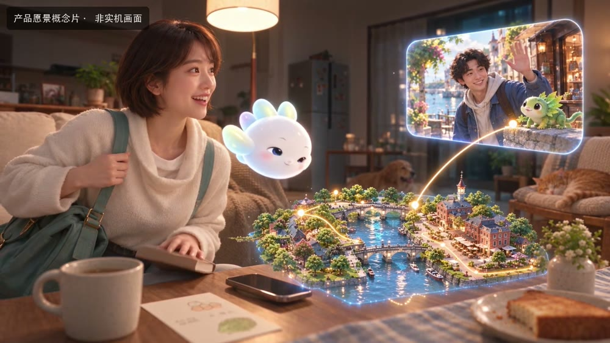

个人智能
身份、记忆与情境理解形成行动建议。人可以纠正AI的理解，并决定它被允许做什么。
NUWA / IDENTITY · MEMORY · INTENTPERSONAL INTELLIGENCE. SHARED WORLDS.
我们希望让个人AI带着共同的记忆与能力，参与生活、连接朋友，进入由人创造的鲜活世界。
BEYOND THE CONVERSATION
一次旅行、一场冒险、一间一起经营的小店。让AI在参与中理解你，让人与人在共同经历中建立关系。
我们正在构建一个个人智能与互动世界平台：让记忆转化为行动，让地方与文化成为可亲历的体验，让创作者的世界承接持续的生命与关系。
理解情境、提出行动，在你的许可下参与，而非把人固化成一组偏好。
从共同兴趣走向共同经历，让智能体帮助真人相遇、协作与创造。
走进新世界时，保留被允许携带的身份、记忆与能力，让新的经历积累价值。

FROM PERSONAL TO SHARED
目标是让Liva协助你把一次出游的想法变成可探索的场景，邀请志趣相投的朋友，与你们共同发现、试错与创作。
世界可以有山川与街巷，也可以有任务、经营、谜题与冒险。每个世界由作者定义自己的表达与规则。
目标体验；画面来自产品愿景概念片。SEE THE POSSIBILITY
一部概念短片，呈现我们希望创造的体验。
THE INTELLIGENCE ARCHITECTURE
从模型生成走向可以持续参与的系统，需要把理解、行动、规则和学习清楚地连接起来。
身份、记忆与情境理解形成行动建议。人可以纠正AI的理解，并决定它被允许做什么。
NUWA / IDENTITY · MEMORY · INTENT生成可互动的场景，预测行动后果；世界运行层执行权限与规则，以实际回执更新共享状态。
PANGU + FUXI / CREATE · ACT · VERIFY研究跨经历保留与迁移能力，以及学习方法自身的改进。以独立任务、等预算比较与回退机制验证收益。
RESEARCH / RETAIN · TRANSFER · IMPROVE模型的推测与世界已发生的事实分开记录。技术目标与当前证据分开呈现。
阅读技术蓝图与验证范围 ↗
已用本地合成账户完成协议原型验证：身份延续、状态冲突处理、权限撤回与重启恢复。真人使用效果、跨世界学习收益与创作者供给仍待验证。
A PLATFORM FOR HUMAN CREATION
一个地方的文化，一个人的想象，一群人的日常，都可以成为共同参与的世界。
先做出值得回访的首作，再让独立作者创造第二个世界，验证持续的AI生命与真人关系能否带来新的参与。拟议商业路径包括付费体验、订阅与表达性道具，并支持作者分益。
北京大学计算机本硕。悉见创始人，后任贝壳创新负责人、千丁CTO。经历覆盖游戏引擎、空间智能、交互式AI角色、产品商业化与团队经营。
THE READING ROOM
INVESTMENT / STRATEGIC INCUBATION
寻找愿意共同定义下一代消费级AI体验的投资人与平台伙伴。
由刘怀洋负责产品、技术与团队，结合伙伴的游戏制作、创作者与分发资源，完成首作和第二作者世界的验证。